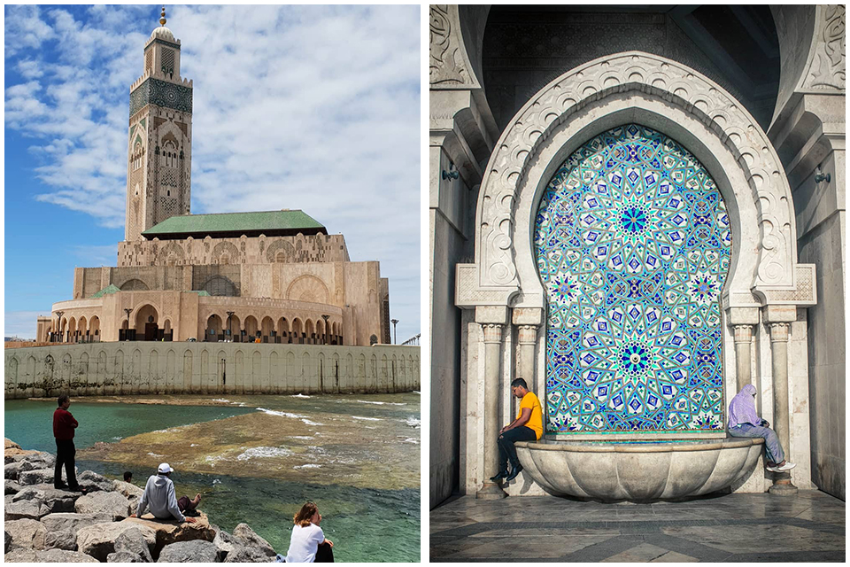
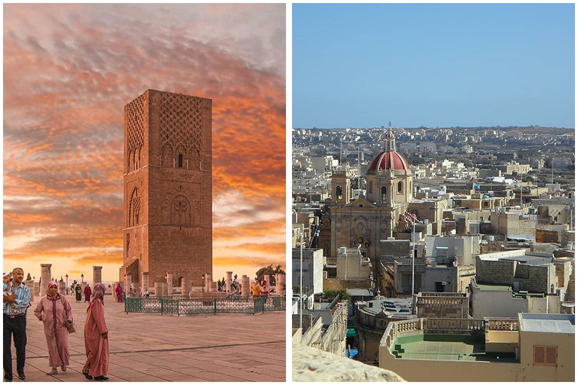
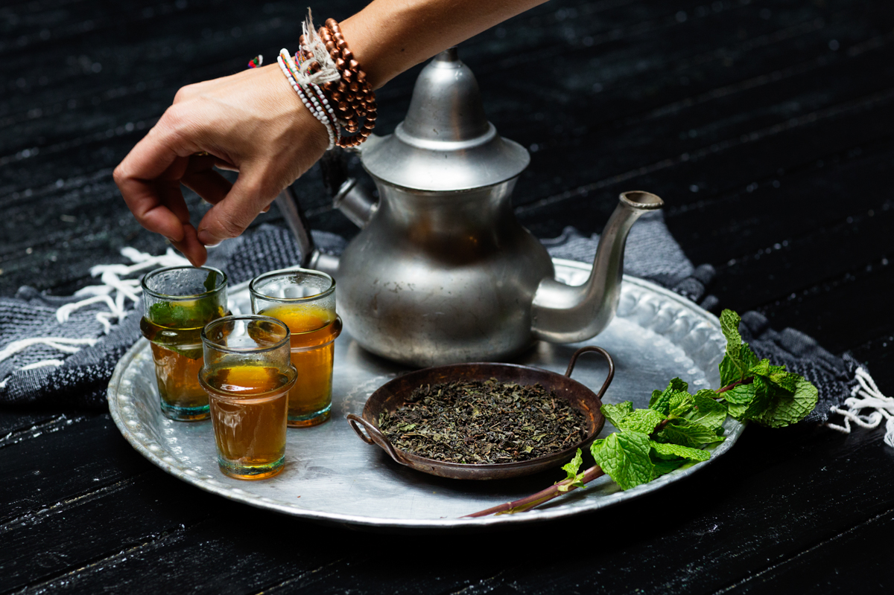
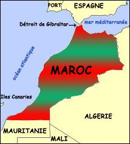
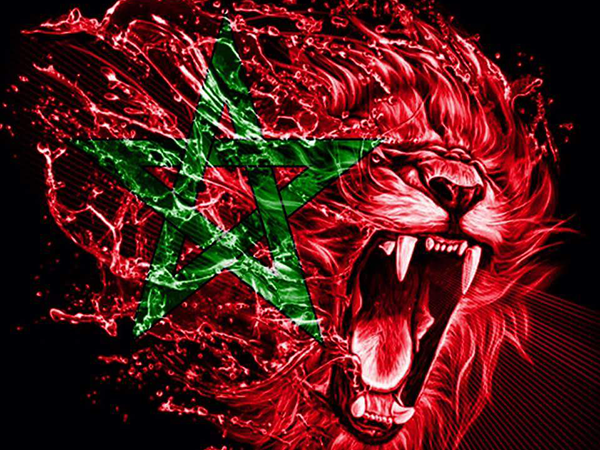

Son régime politique est une monarchie constitutionnelle semi-parlementaire unitaire et décentralisée.
Sa capitale administrative et politique est Rabat sa plus grande ville, sa capitale économique est Casablanca.

Tous ceux qui sont déjà partis en voyage au Maroc ont déjà goûté au thé à la menthe, cette succulente concoction à base de thé vert infusé, de menthe et de sucre. Boisson nationale du Royaume par excellence, le thé est préparé et offert en partage à toute heure de la journée. Laissez-vous « envou-thé » sans attendre par son subtil équilibre de douceur et de fraîcheur. 
Le pays est bordé à l'ouest par l'océan Atlantique et, au nord, par la mer Méditerranée. Le Maroc possède le plus long littoral du continent africain avec 3500 km. Elles occupent plus des deux tiers du territoire et se composent de quatre massifs : le Haut-Atlas, le Moyen-Atlas, l'Anti- Atlas et le Rif.
Le Maroc était le pays où les Grecs anciens situaient le mythique jardin des Hespérides. Le Maroc était connu sous le nom de « royaume de Marrakech ».
Le surnom du Maroc est :Les lions de L'Atlas.